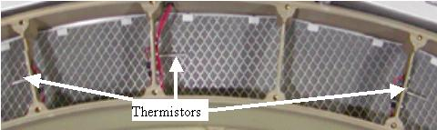

Operating Documentation
Direction 5307452-8EN, Rev# 4
Discovery CT750 HD Service Methods - Adv
Operating Documentation |
| Last Revision | 23 October 2008 |
| Shock hazard | |
| Removing the Detector Plenum with power on can result in equipment damage or shock. | |
| Follow safety procedures when removing gantry covers and accessing the detector filter assembly. |
| POTENTIAL FOR EQUIPMENT DAMAGE | |
| USING A VACUUM HOSE NEAR LIVE ELECTRONIC EQUIPMENT MAY CAUSE EQUIPMENT DAMAGE DUE TO STATIC. | |
| Make sure equipment is turned off prior to maintenance |
Remove the fan plate to access the filter assembly. (With the fan plate off, the filter is exposed for cleaning.) (For procedures to remove the fan plate, see Plenum Fan, Fan Plate Assembly Replacement
Use the HEPA vacuum to clean the filter through the opening in the plenum behind the fan plate.
| NOTE: | Be careful around the plenum thermistors. See
Illustration 1, showing the
thermistors, cabling and grillwork covering the filter. The grill is there to provide stiffness to the filter assembly and to make sure the EMC mesh on the back of the filter is not damaged during cleaning. Illustration 1: Plenum Filter and Thermistors  |
Reinstall the fan plate and connections, following the recommended torque specs found in the Plenum Fan, Fan Plate Assembly Replacement procedure.
Clean off any debris that may be on the detector face plate using warm soapy water.
Initially vacuum the gantry filter while it is in place to avoid shaking dust and debris loose.
Illustration 2: Gantry Filter on Gantry Left

Remove the gantry filter and vacuum it from the front to pull the dust and debris out of the filter.
| NOTE: | Vacuuming from the back first may pull dust deeper into the filter making it harder to remove. |
Vacuum the back (after cleaning the front) to remove any dust that penetrated the filter.
Reinstall the gantry filter.
Vacuum the fans on the top of the gantry cover.
Remove the gantry rotational lock, if engaged.
Rotate the gantry by hand and inspect all cables in the rotational path for signs of wear.
Check that all cable keepers are installed and tight.
Inspect the gantry cover cable and confirm that all cable keepers are in place, and the cables are not falling into the rotational path.